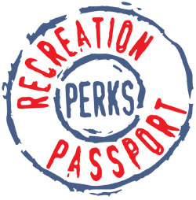

Where to go from here
Internet Links
- Search for a camping location in Michigan based on your county or region of the state
- Once you find a site, make an on-line registration to book your site.
- The Michigan DNR site.
- Read up on camping on Wikipedia.
Smartphone App
The State of Michigan offers some great applications for your phone or tablet. You can get the MI Camping and Recreation Locator application for your phone or tablet by clicking below.

Get the Passport for your ride
Last time you were at the DMV the front counter rep may have asked you about getting the Michigan Recreation Passport for your vehicle registration. If you enjoy camping, and plan on going at least twice in a year. Get the Passport! It is such a value. $11.00, and you get free access for parking in any of the many Michigan State Parks. The Passport doesn't cover the cost of camping, but it will save you on the cost of parking. Plus, you can use it even if you go to one of the parks just for the day.